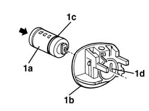

7040A15 facia flap lock barrel
- Path
- Procedures > 70 FITTINGS > 7040 BODYSHELL INTERIOR TRIMS AND FITTINGS > 7040A passenger compartment trim > 7040A15 facia flap lock barrel
- Kind
- repair procedure (removal / refitting; the operation number is the code)
- Applies to
- all engines; all production periods
- Interactive page
- https://sloeber94.github.io/elrnDB-a156/en/#/3238791
Applies to: all engines; all production periods
Applies to: all engines; all production periods
 Removing
Removing
 Refitting
RefittingThe little block lock cannot be pull out from the handle without damaging it irreparably . Then, substitute the handle.
Applies to: all engines; all production periods
Refitting
Removing1. Install the block (1a) in the new handle (1b) by placing the spline (1c) into its rod spring (1d).

Applies to: all engines; all production periods
Check the operation of the block and the correct functioning of the handle.